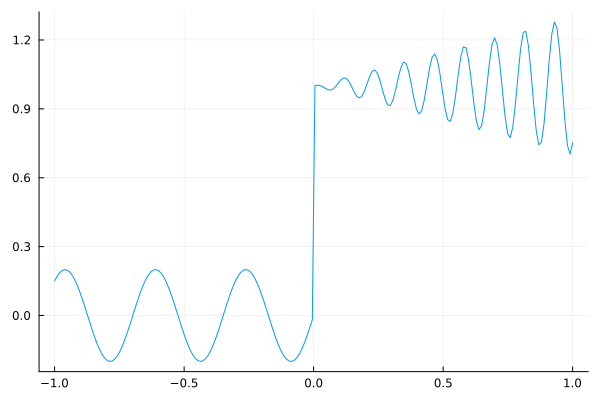
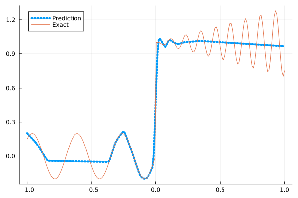
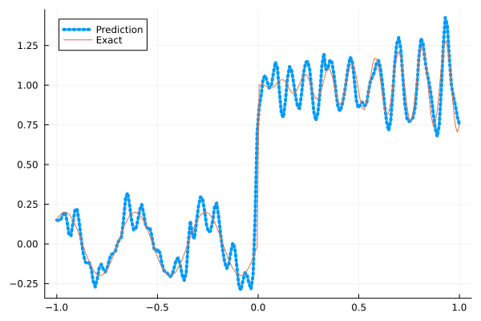
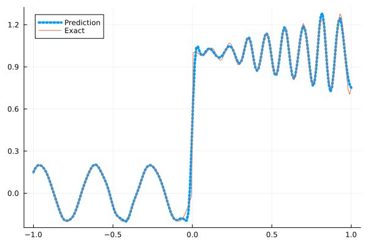
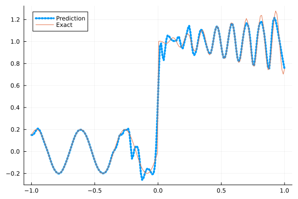
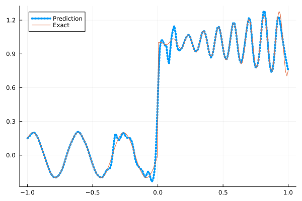

Fitting a nonlinear discontinuous function
This example is taken from here. However, we do not use adaptive activation functions. Instead, we show that using suitable non-parametric activation functions immediately performs better.
Consider the following discontinuous function with discontinuity at $x=0$:
\[u(x)= \begin{cases}0.2 \sin (18 x) & \text { if } x \leq 0 \\ 1+0.3 x \cos (54 x) & \text { otherwise }\end{cases}\]
The domain is $[-1,1]$. The number of training points used is 50.
Import pacakges
using Lux, Sophon
using NNlib, Optimisers, Plots, Random, StatsBase, ZygoteDataset
function u(x)
if x <= 0
return 0.2 * sin(18 * x)
else
return 1 + 0.3 * x * cos(54 * x)
end
end
function generate_data(n=50)
x = reshape(collect(range(-1.0f0, 1.0f0, n)), (1, n))
y = u.(x)
return (x, y)
endgenerate_data (generic function with 2 methods)Let's visualize the data.
x_train, y_train = generate_data(50)
x_test, y_test = generate_data(200)
Plots.plot(vec(x_test), vec(y_test),label=false)
Naive Neural Nets
First we demonstrate show naive fully connected neural nets could be really bad at fitting this function.
model = FullyConnected((1,50,50,50,50,1), relu)Chain(
layer_1 = Dense(1 => 50, relu), # 100 parameters
layer_2 = Dense(50 => 50, relu), # 2_550 parameters
layer_3 = Dense(50 => 50, relu), # 2_550 parameters
layer_4 = Dense(50 => 50, relu), # 2_550 parameters
layer_5 = Dense(50 => 1), # 51 parameters
) # Total: 7_801 parameters,
# plus 0 states, summarysize 80 bytes.Train the model
function train(model, x, y)
ps, st = Lux.setup(Random.default_rng(), model)
opt = Adam()
st_opt = Optimisers.setup(opt,ps)
function loss(model, ps, st, x, y)
y_pred, _ = model(x, ps, st)
mes = mean(abs2, y_pred .- y)
return mes
end
for i in 1:2000
gs = gradient(p->loss(model,p,st,x,y), ps)[1]
st_opt, ps = Optimisers.update(st_opt, ps, gs)
if i % 100 == 1 || i == 2000
println("Epoch $i || ", loss(model,ps,st,x,y))
end
end
return ps, st
endtrain (generic function with 1 method)Plot the result
@time ps, st = train(model, x_train, y_train)
y_pred = model(x_test,ps,st)[1]
Plots.plot(vec(x_test), vec(y_pred),label="Prediction",line = (:dot, 4))
Plots.plot!(vec(x_test), vec(y_test),label="Exact",legend=:topleft)Epoch 1 || 1.5350633479506683
Epoch 101 || 0.021769739011348155
Epoch 201 || 0.016195963845423003
Epoch 301 || 0.015644327588985513
Epoch 401 || 0.015189967241693185
Epoch 501 || 0.01442874243387967
Epoch 601 || 0.013667250572556187
Epoch 701 || 0.013190084293702909
Epoch 801 || 0.013000202843960836
Epoch 901 || 0.012761465816786605
Epoch 1001 || 0.01259467638895813
Epoch 1101 || 0.012504210866313752
Epoch 1201 || 0.012496164013071293
Epoch 1301 || 0.012433596796672983
Epoch 1401 || 0.01237441759304974
Epoch 1501 || 0.012405706282500942
Epoch 1601 || 0.012379756470030878
Epoch 1701 || 0.012348984753682462
Epoch 1801 || 0.01238600840434021
Epoch 1901 || 0.012325658195476059
Epoch 2000 || 0.012330177259055624
11.588028 seconds (20.46 M allocations: 1.829 GiB, 3.69% gc time, 94.37% compilation time)
Siren
We use four hidden layers with 50 neurons in each.
model = Siren(1,50,50,50,50,1; omega = 30f0)Chain(
layer_1 = Dense(1 => 50, sin), # 100 parameters
layer_2 = Dense(50 => 50, sin), # 2_550 parameters
layer_3 = Dense(50 => 50, sin), # 2_550 parameters
layer_4 = Dense(50 => 50, sin), # 2_550 parameters
layer_5 = Dense(50 => 1), # 51 parameters
) # Total: 7_801 parameters,
# plus 0 states, summarysize 88 bytes.@time ps, st = train(model, x_train, y_train)
y_pred = model(x_test,ps,st)[1]
Plots.plot(vec(x_test), vec(y_pred),label="Prediction",line = (:dot, 4))
Plots.plot!(vec(x_test), vec(y_test),label="Exact",legend=:topleft)Epoch 1 || 0.8201291454674139
Epoch 101 || 0.00014931835408770545
Epoch 201 || 4.609027424430399e-6
Epoch 301 || 1.9980805132883302e-7
Epoch 401 || 4.7121047552769265e-9
Epoch 501 || 5.23892204425163e-11
Epoch 601 || 1.0072663159662653e-12
Epoch 701 || 9.126772820119193e-14
Epoch 801 || 4.9274786483413733e-14
Epoch 901 || 5.354915747304388e-14
Epoch 1001 || 4.516424491005207e-14
Epoch 1101 || 1.9947368410650954e-14
Epoch 1201 || 3.354835719792063e-14
Epoch 1301 || 7.071063066963612e-14
Epoch 1401 || 3.6042669214203424e-14
Epoch 1501 || 1.0106496783197789e-13
Epoch 1601 || 5.59242965110138e-14
Epoch 1701 || 5.456370171500666e-14
Epoch 1801 || 4.708339237713646e-14
Epoch 1901 || 4.4176522569859306e-14
Epoch 2000 || 1.0202625510291789e-13
3.933386 seconds (5.81 M allocations: 1.178 GiB, 4.99% gc time, 78.76% compilation time)
As we can see the model overfits the data, and the high frequencies cannot be optimized away. We need to tunning the hyperparameter omega
model = Siren(1,50,50,50,50,1; omega = 10f0)Chain(
layer_1 = Dense(1 => 50, sin), # 100 parameters
layer_2 = Dense(50 => 50, sin), # 2_550 parameters
layer_3 = Dense(50 => 50, sin), # 2_550 parameters
layer_4 = Dense(50 => 50, sin), # 2_550 parameters
layer_5 = Dense(50 => 1), # 51 parameters
) # Total: 7_801 parameters,
# plus 0 states, summarysize 88 bytes.@time ps, st = train(model, x_train, y_train)
y_pred = model(x_test,ps,st)[1]
Plots.plot(vec(x_test), vec(y_pred),label="Prediction",line = (:dot, 4))
Plots.plot!(vec(x_test), vec(y_test),label="Exact",legend=:topleft)Epoch 1 || 0.8111393227978977
Epoch 101 || 0.00595478642688203
Epoch 201 || 0.0040085309872467025
Epoch 301 || 0.0026000167668232053
Epoch 401 || 0.0017429283943243134
Epoch 501 || 0.0012697459622248398
Epoch 601 || 0.0009417760556868541
Epoch 701 || 0.0006894238337251252
Epoch 801 || 0.0005033548396969872
Epoch 901 || 0.00036908060813164474
Epoch 1001 || 0.0002651749299702516
Epoch 1101 || 0.00018118551805915473
Epoch 1201 || 0.00011807955922383248
Epoch 1301 || 7.746467373848921e-5
Epoch 1401 || 5.5417504015262565e-5
Epoch 1501 || 4.456779877872859e-5
Epoch 1601 || 3.884477169487693e-5
Epoch 1701 || 3.510971937969484e-5
Epoch 1801 || 3.215956253969233e-5
Epoch 1901 || 2.9592921463977598e-5
Epoch 2000 || 2.7291638071778804e-5
0.690712 seconds (1.15 M allocations: 891.390 MiB, 4.10% gc time)
Gaussian activation function
We can also try using a fully connected net with the gaussian activation function.
model = FullyConnected((1,50,50,50,50,1), gaussian)Chain(
layer_1 = Dense(1 => 50, gaussian), # 100 parameters
layer_2 = Dense(50 => 50, gaussian), # 2_550 parameters
layer_3 = Dense(50 => 50, gaussian), # 2_550 parameters
layer_4 = Dense(50 => 50, gaussian), # 2_550 parameters
layer_5 = Dense(50 => 1), # 51 parameters
) # Total: 7_801 parameters,
# plus 0 states, summarysize 80 bytes.@time ps, st = train(model, x_train, y_train)
y_pred = model(x_test,ps,st)[1]
Plots.plot(vec(x_test), vec(y_pred),label="Prediction",line = (:dot, 4))
Plots.plot!(vec(x_test), vec(y_test),label="Exact",legend=:topleft)Epoch 1 || 0.5488212521292439
Epoch 101 || 0.00493311218051267
Epoch 201 || 0.0036721621909981826
Epoch 301 || 0.001566583177184473
Epoch 401 || 7.878122261582549e-5
Epoch 501 || 1.7696857849164419e-6
Epoch 601 || 1.227641589449834e-7
Epoch 701 || 4.135005151978162e-8
Epoch 801 || 1.1655959203335748e-6
Epoch 901 || 2.410413208310373e-6
Epoch 1001 || 4.156066388291145e-9
Epoch 1101 || 1.6424432520071833e-9
Epoch 1201 || 2.2567401725193366e-5
Epoch 1301 || 4.1993945512163593e-10
Epoch 1401 || 4.999418288560618e-11
Epoch 1501 || 1.640413211496185e-11
Epoch 1601 || 5.7865201141579575e-12
Epoch 1701 || 2.3956219212139533e-12
Epoch 1801 || 0.0007836989395565528
Epoch 1901 || 5.247172862909759e-7
Epoch 2000 || 1.8082993217606522e-7
4.287561 seconds (8.25 M allocations: 1.289 GiB, 4.27% gc time, 81.37% compilation time)
Quadratic activation function
quadratic is much cheaper to compute compared to the Gaussain activation function.
model = FullyConnected((1,50,50,50,50,1), quadratic)Chain(
layer_1 = Dense(1 => 50, quadratic), # 100 parameters
layer_2 = Dense(50 => 50, quadratic), # 2_550 parameters
layer_3 = Dense(50 => 50, quadratic), # 2_550 parameters
layer_4 = Dense(50 => 50, quadratic), # 2_550 parameters
layer_5 = Dense(50 => 1), # 51 parameters
) # Total: 7_801 parameters,
# plus 0 states, summarysize 80 bytes.@time ps, st = train(model, x_train, y_train)
y_pred = model(x_test,ps,st)[1]
Plots.plot(vec(x_test), vec(y_pred),label="Prediction",line = (:dot, 4))
Plots.plot!(vec(x_test), vec(y_test),label="Exact",legend=:topleft)Epoch 1 || 0.8840864017720217
Epoch 101 || 0.006573785060755748
Epoch 201 || 0.005768318931898475
Epoch 301 || 0.005394928998782792
Epoch 401 || 0.0049475496372443535
Epoch 501 || 0.004440099211448347
Epoch 601 || 0.0039927569564082695
Epoch 701 || 0.0034615378450987776
Epoch 801 || 0.00285257969431532
Epoch 901 || 0.002180797088438976
Epoch 1001 || 0.0012887797403027268
Epoch 1101 || 0.0005788947193876118
Epoch 1201 || 0.00014174954209761334
Epoch 1301 || 2.9715070052204864e-5
Epoch 1401 || 4.468245854297905e-6
Epoch 1501 || 7.803196476428712e-7
Epoch 1601 || 2.2731878111972813e-7
Epoch 1701 || 2.910036999048511e-5
Epoch 1801 || 3.147561482582932e-8
Epoch 1901 || 1.367861152563221e-6
Epoch 2000 || 3.652653675576856e-9
3.303521 seconds (5.18 M allocations: 1.145 GiB, 3.99% gc time, 85.94% compilation time)
Conclusion
"Neural networks suppresse high frequency components" is a misinterpretation of the spectral bias. The accurate way of putting it is that the lower frequencies in the error are optimized first in the optimization process. This can be seen in Siren's example of overfitting data, where you do not have implicit regularization. The high frequency in the network will never go away because it has fitted the data perfectly.
Mainstream attributes the phenomenon that neural networks "suppress" high frequencies to gradient descent. This is not the whole picture. Initialization also plays an important role. Siren mitigats this problem by initializing larger weights in the first layer, while activation functions such as gassian have large enough gradients and sufficiently large support of the second derivative with proper hyperparameters. Please refer to Vincent Sitzmann, Julien Martel, Alexander Bergman, David Lindell, Gordon Wetzstein (2020), Sameera Ramasinghe, Simon Lucey (2021) and Sameera Ramasinghe, Lachlan MacDonald, Simon Lucey (2022) if you want to dive deeper into this.